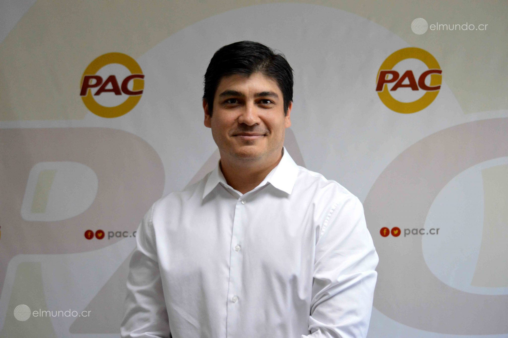
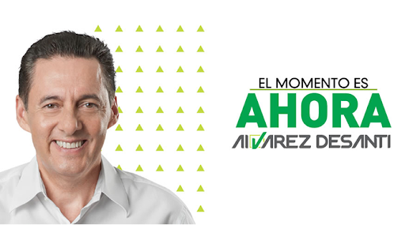
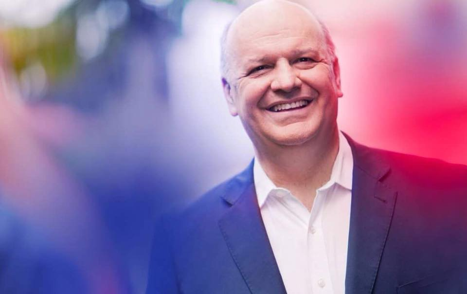
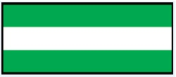

Candidatos
|  | |
|  |  |
Resultados definitivos 4 de febrero de 2018
| Divisa | Candidatos | Encuesta #1 | Encuesta #2 |
|
Fabricio Alvarado | 22,89% | 39,41% | Carlos Alvarado | 23,51% | 60,59% |
|---|---|---|---|
|  | Antonio Alvarez | 17,98% | 0% | Rodolfo Piza | 17,98% | 0% |
Lista de Candidatos, Lugares de Votacion
- Carlos Alvarado Quesada
- Fabricio Alvarado
- Antonio Alvarez
- Rodolfo Piza
- Puestos de Votacion
- Encuesta